Website Redesign Assignment
Research, Design, and DevelopmentThis was a hypothetical redesign of a regional retailer's site. This process included an audit of the existing site, user research and usability testing, competitor research, an audit of a competitor's website, iterations of wireframes, iterations of low- and hi-fidelity prototypes, and the development of the responsive website.
Click through the prototype here; be sure to resize your browser to view the responsive design!
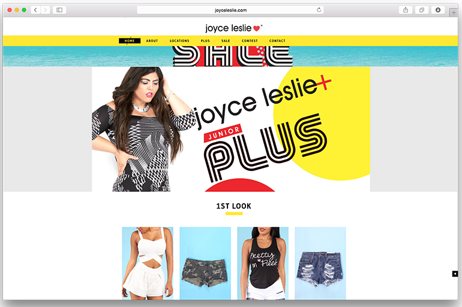
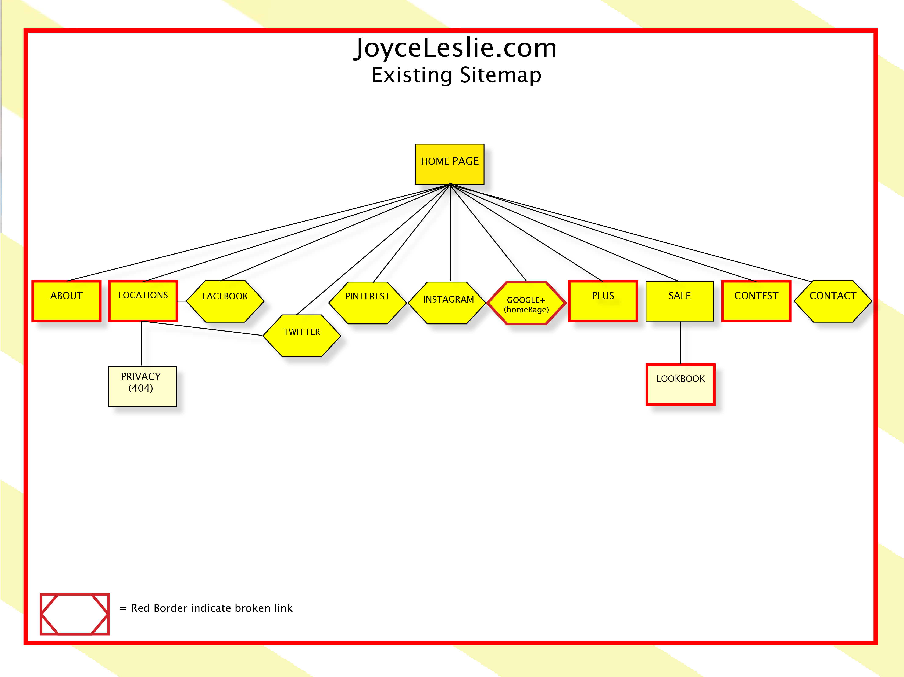
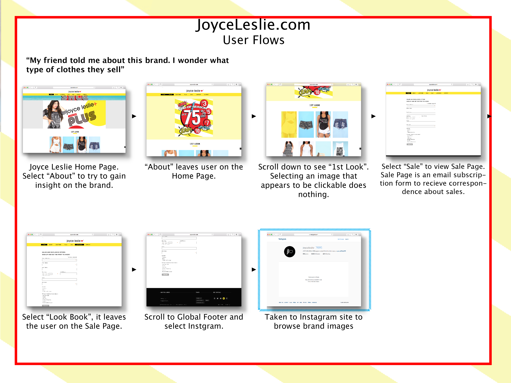
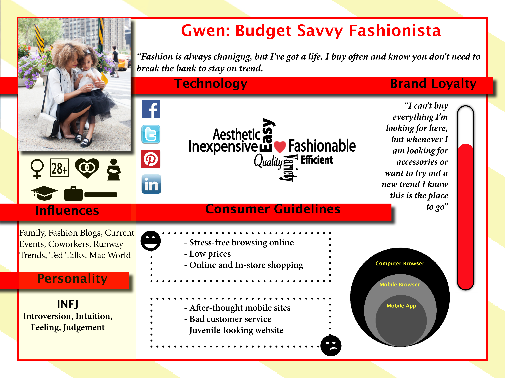
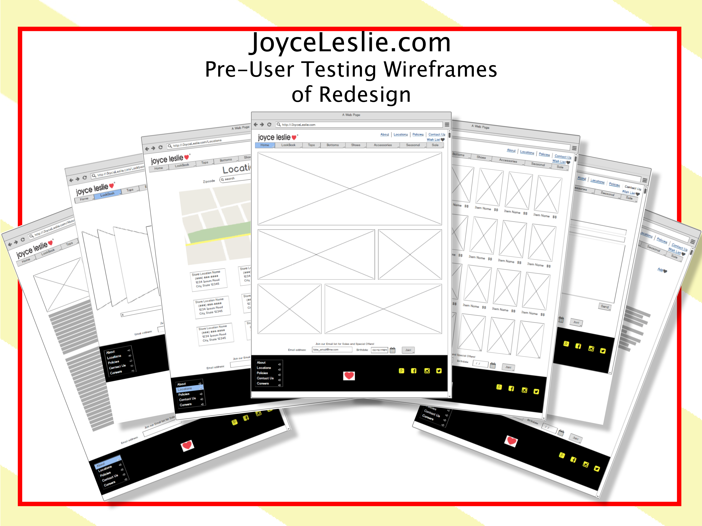
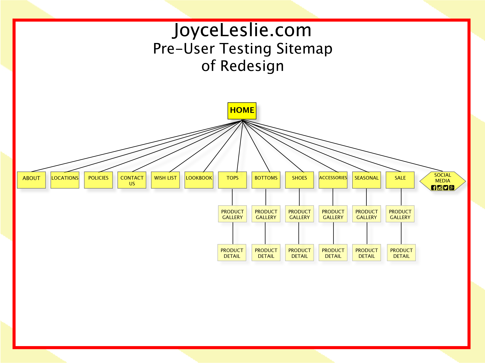
 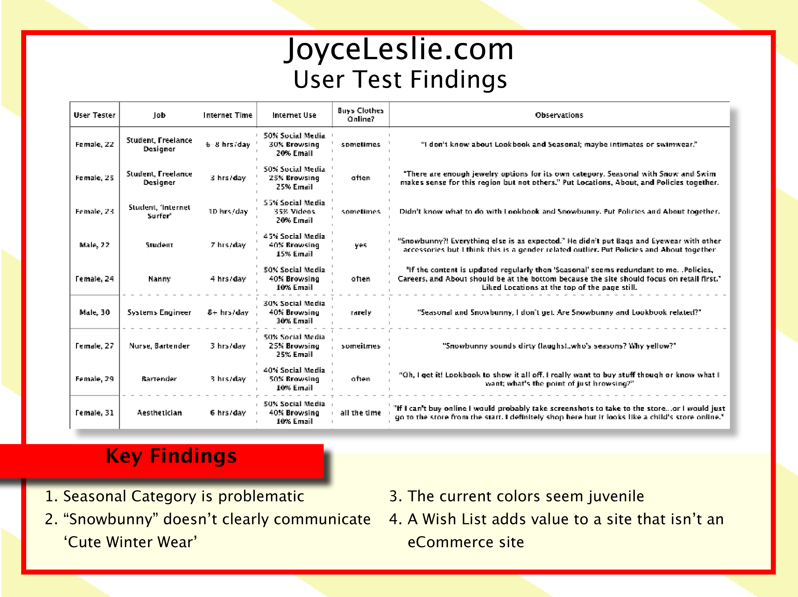
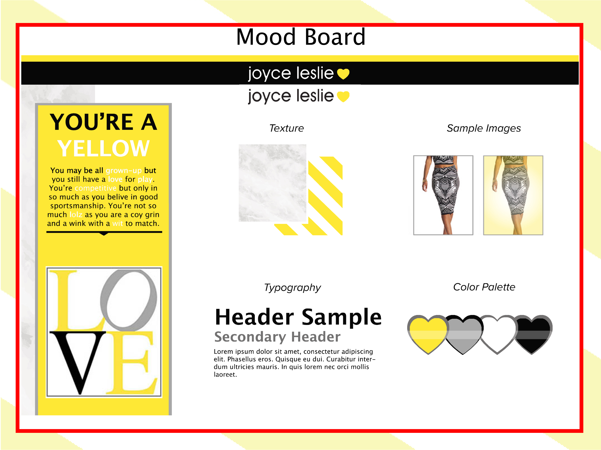
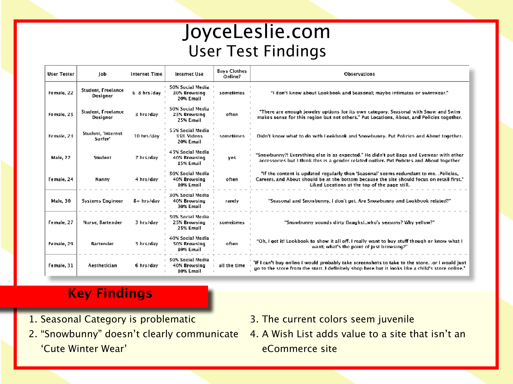
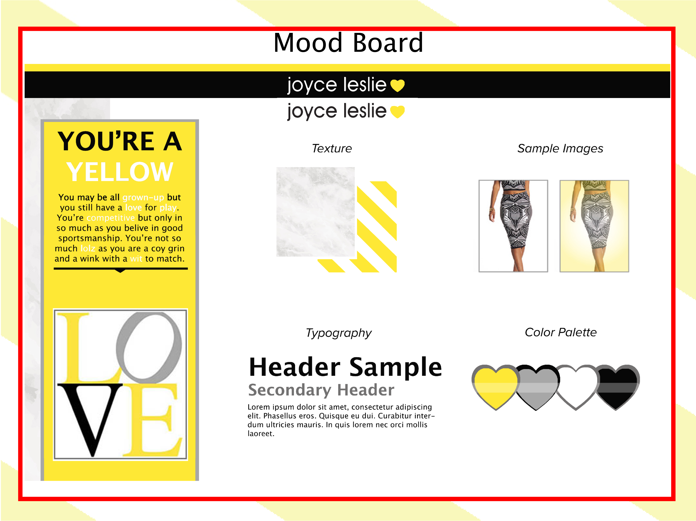

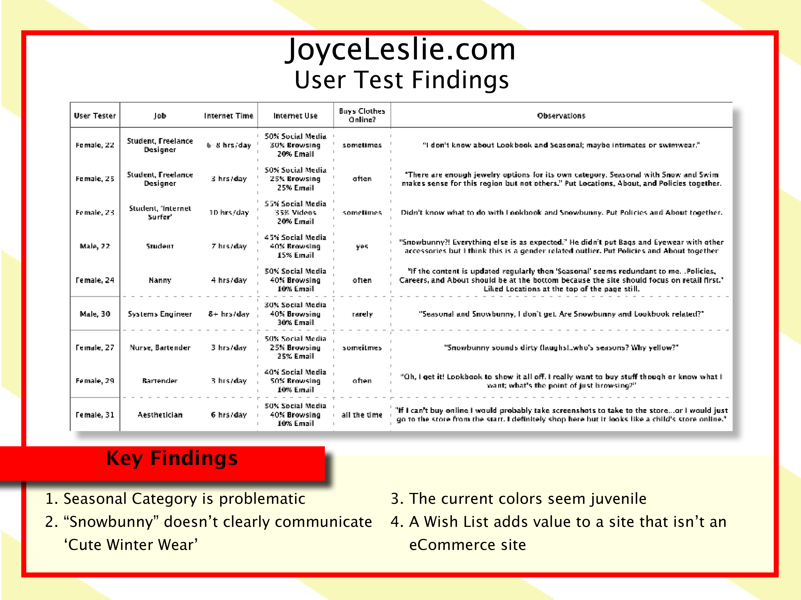
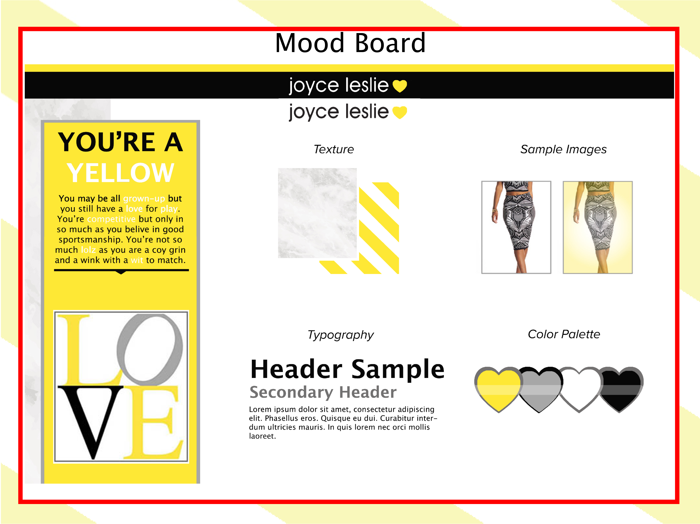